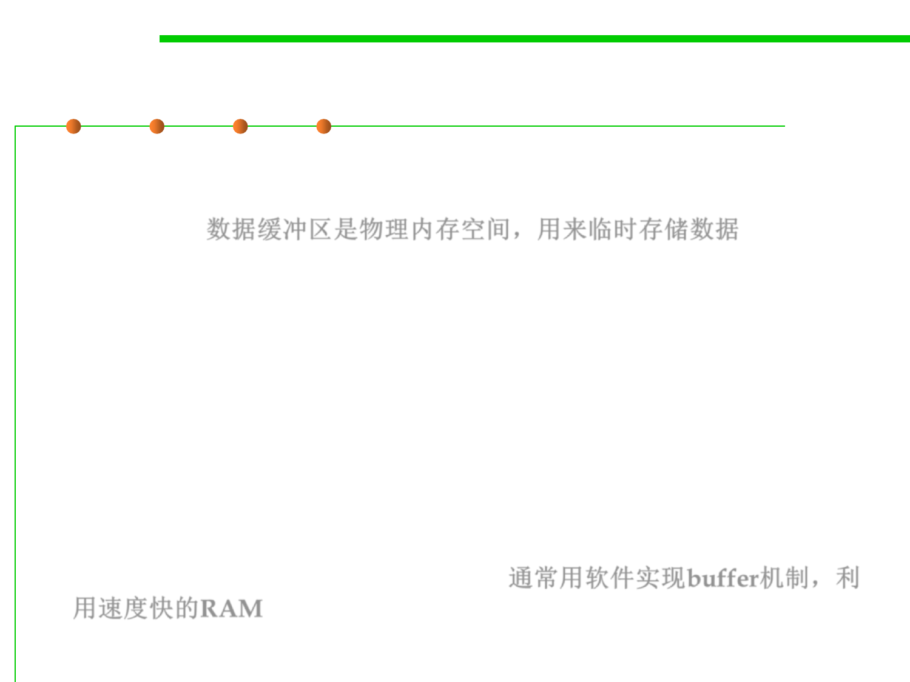

Buffer
8.1 Metrics, Principles, and Methods of Construction for Performance
▪ Data buffer (or just buffer) is a region of a physical memory storage
used to temporarily store data while it is being moved from one place
to another. 数据缓冲区是物理内存空间，用来临时存储数据
▪ Typically, the data is stored in a buffer as it is retrieved from an input
device (such as a microphone) or just before it is sent to an output
device (such as speakers).
▪ Buffers can be implemented in a fixed memory location in hardware—
or by using a virtual data buffer in software, pointing at a location in
the physical memory. In all cases, the data stored in a data buffer are
stored on a physical storage medium.
▪ A majority of buffers are implemented in software, which typically use
the faster RAM to store temporary data, due to the much faster access
time compared with hard disk drives. 通常用软件实现buffer机制，利
用速度快的RAM